Et diverst og forhistorisk landskab
Arks landskab er en unik blanding af frodige jungler, sneklædte bjerge,
dybe sumpe og åbne sletter fyldt med liv. Hver region har sine egne farer
og ressourcer, og dyrelivet ændrer sig afhængigt af klima og terræn.
I himmelen kan 4 store obelisker ses, hvilket er med til at give ideen
om at det måske ikke bare er et sted i fortiden spillet finder sted?
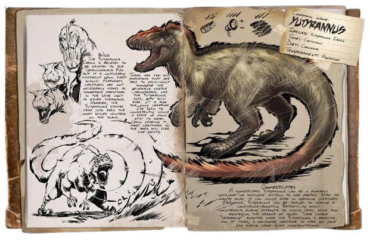
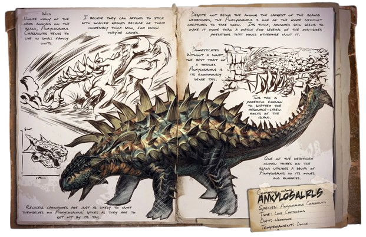
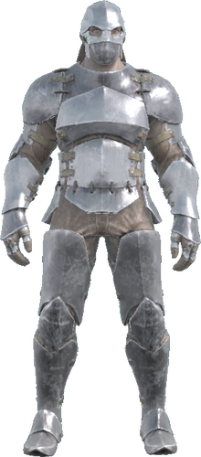
 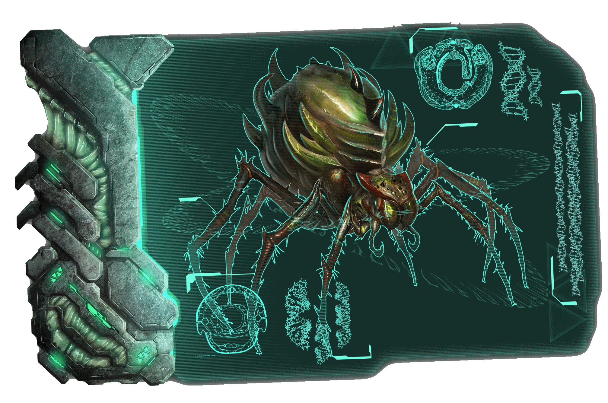
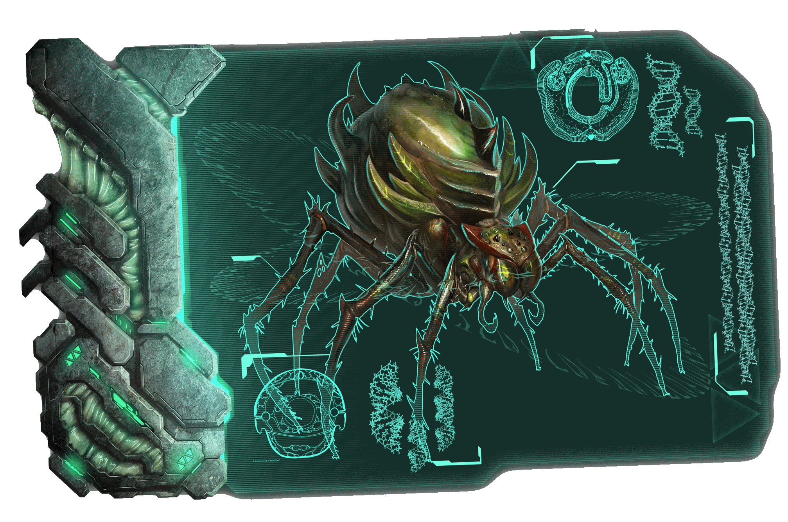
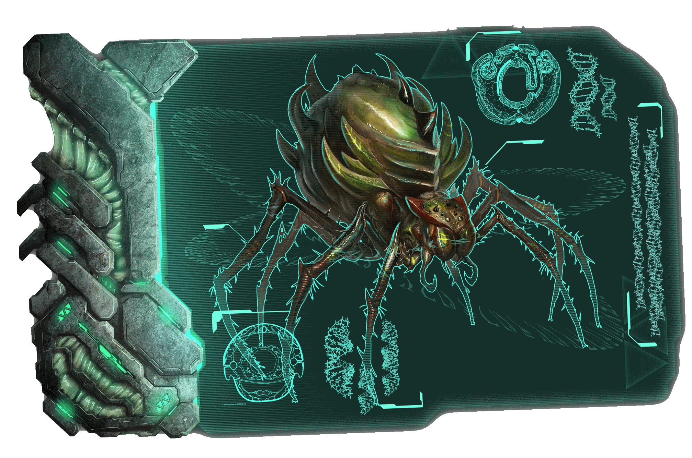
Udforsk, dræb, tæm, byg og overlev.
Ark er et spil der går ud på at overleve i en primitiv verden
fyldt med dinosaurer og andre forhistoriske dyr. Du skal
samle ressourcer, bygge redskaber og kæmpe mod den
barske natur for at overleve.
Hvad vil du vide mere om?
Ark er fyldt med forhistoriske dyr og dinosaurer (og lidt ekstra),
der både kan være en trudsel og en hjælp for spilleren.
Man kan nemlig tæmme dem, og dermed både ride, kæmpe
og samle ressourcer med dem. For at tæmme de fleste af dem
skal man dog først slå dem bevidstløse, hvilket kan være
udfordrende eftersom de forsøger at spise dig samtidigt.
Ark kan spilles på to måder; enten PvP eller PvE. I PvE,
er det spilleren mod den barske natur og dinosaurene.
Her er hovedmålet progression, og at klare nogle store
bosser helt til sidst af spillet. I PvP derimod er det
spillerne mod hinanden; her kan man raide hinandens
baser, nakke hinandens tæmmede dino'er, og stjæle
ressourcer. Ved hjælp af begge modes er der noget for
de fleste, så længe man da kan lide overlevelsesspil.
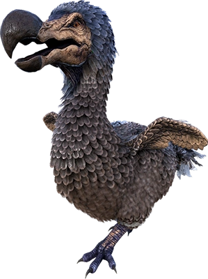 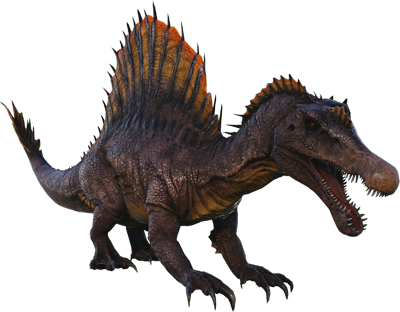 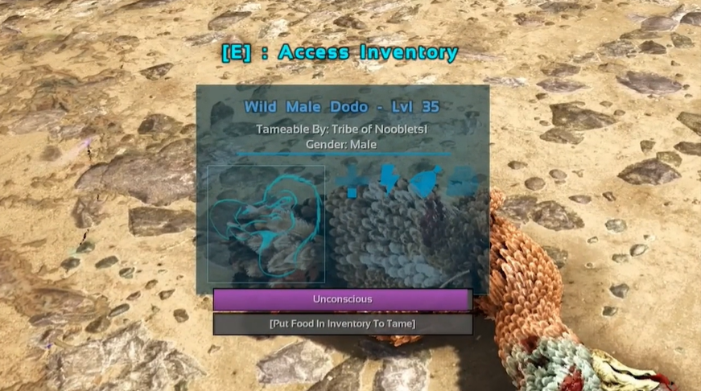
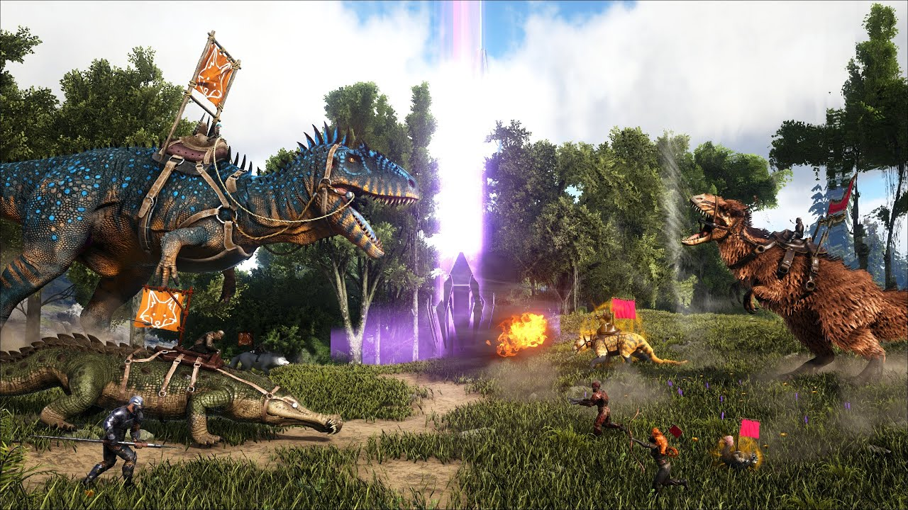
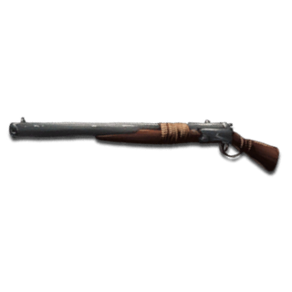